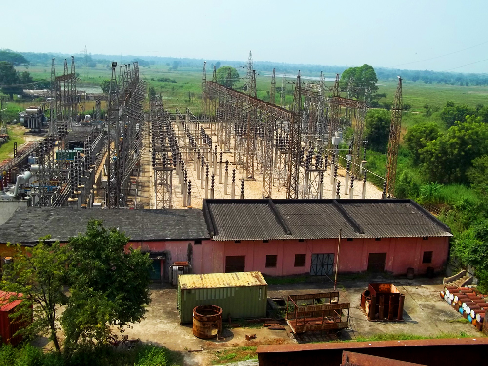

Chipilima Hydro Electric Project (CHEP) is a hydropower plant located at Chipilima, Sambalpur, Odisha, India.
The Odisha government has plans for the modernisation of 5th and 6th unit of Burla Hydro Electric Project (BHEP) and 3rd unit of Chipilima Hydro Electric Project (CHEP) during the 11th five year plan tenure.[3] which in effect lead to modernisation and renovation of the 1st and the 2nd unit of Chipilima Hydro-Electric Project (CHEP) has been completed lengthening the longevity of these two units. This project being a part of the other hydro electric projects of Odisha collectively contributed 5234 million unit in 2005–06, to 7354 million units in 2006–07, and to 7883 million units in 2008–09.
|

|
- "Archived copy". Archived from the original on 31 January 2012. Retrieved 17 October 2011
- OHPC to add 171 megawatt
- Odisha government plans to take up modernisation of 5th and 6th unit of BHEP and 3rd unit of CHEP during the 11th five year plan period.12 August 2008
|
| Official name: |
ଚିପିଲିମା ଜଳବିଦ୍ୟୁତ ପ୍ରକଳ୍ପ (Odia) |
| Country: |
India |
| Location: |
Chipilima, Sambalpur, Odisha |
| Coordinates: |
21°21′13.03″N 83°55′0.99″E |
| Status: |
Functional |
| Owner(s): |
Odisha Hydro Power Corporation, Bhubaneswar |
| Thermal power station |
| Primary fuel: |
Hydropower |
| Power generation |
|
| Nameplate capacity: |
75 MW |
|